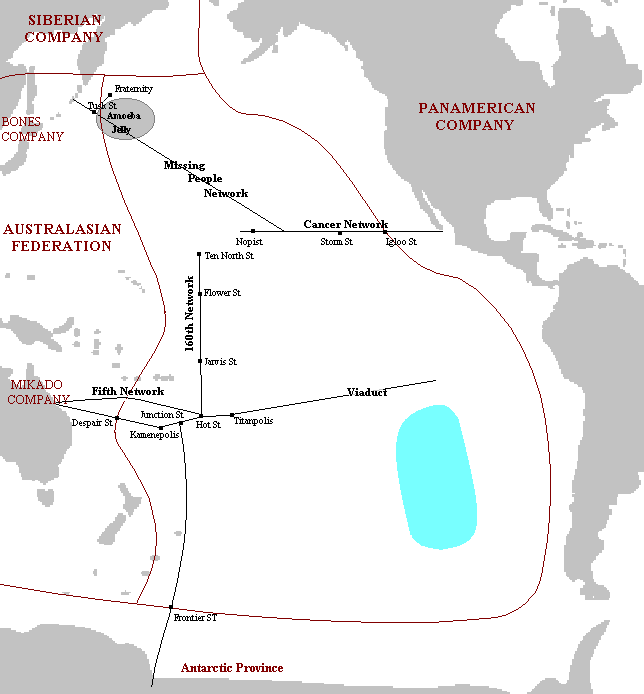

| plan du site |
La Compagnie de la Banquise en 2360
|
Histoire Organisation Réseaux et stations Autres informations Romans |
 |
|
Notes sur la carte La carte est cliquable Elle est une interprétation personnelle de ma lecture des Compagnie des Glaces. |
Au alentours de 2200 EG, des hommes construisirent le réseau Banquise Sud pour reliant l'Australie au sud de l'Inlandsis sud-américain. Vers 2240 EG, plusieurs éruptions volcaniques firent que la banquise se réchauffa et ce réseau fut longtemps abandonné, la banquise étant réputée devenue fragile.
Seuls quelques chasseurs de baleines vivant à Whaler Station osaient emprunter les premières centaines de kilomètres mais n'osaient pas se risquer très loin.
En 2344 EG, le Mikado cherchait à rentabiliser l'envoi de marchandises vers la Panaméricaine. Il s'associa avec le Kid pour l'exploration de cet ancien réseau. Celui-ci découvrit ainsi le volcan Titan qui coupait le réseau et imagina d'exploiter sa chaleur comme source d'énergie pour construire une nouvelle compagnie.
Le Kid et le Mikado fondirent alors le Consortium Kid-Mikado aussi appelé la Compagnie Trans-Pacifique. Rapidement, l'appellation de Compagnie de la Banquise vint remplacer ces deux noms.
D'un point de vue pratique, c'est le Kid qui dirigeait la Compagnie, car le Mikado détestait se trouver sur la banquise. Une ville se construisit à l'emplacement de Whaler Station et fut nommée Kid-Mikado-Polis, puis KMPolis et enfin Kamenepolis.
En 2345 EG, Wolky, le chef de la police tenta de renverser le Kid et fut exilé. A la frontière de la Compagnie, une station se créa, où s'entassèrent les voyageurs qui ne pouvaient rentrer dans la Compagnie (il fallait en effet posséder six mille dollars pour entrer dans la Compagnie) : à cause des rancœurs qu'elle suscita, elle fut surnommée Amertume Station. Le Kid créa une monnaie, la calorie, qui concurrença rapidement les dollars panaméricains.
La réapparition du Soleil (2346), due aux Rénovateurs de Très vite, un antagonisme se créa entre Kamenepolis et le reste de la compagnie. Alors que le Kid cherchait à diversifier les productions de sa compagnie (huile de phoque, verre de silice, ...), Kamenepolis devenait une ville de plaisir et de débauche, sous la conduite des Harponneurs de Baleines qui ne voyaient pas d'un bon œil la production d'huile de phoques qui concurrençait la leur. En 2347, un événement mit le feu aux poudres. Un fonctionnaire de la compagnie fut découvert sur un véhicule n'utilisant pas le rail, Kamenepolis et les Harponneurs se révoltèrent et une guerre civile éclata, conflit qui devint très rapidement une guerre entre la Banquise et la Panaméricaine. Ces derniers furent à grand peine repoussés et les Harponneurs écrasés. Le Mikado vendit alors ses actions au Kid S'ensuivit une période de reconstruction et de paix, mais depuis 2360 EG, les rénovateurs de Fraternité, à bord de dirigeables, attaquent et pillent des stations de la Compagnie. Elle fut secouée par un mouvement d'exode, la Petite Panique. Peu après, ce fut la première compagnie atteinte par le réchauffement et le Kid commence à créer des moyens de transports maritimes et créa la Société du Pacifique en remplacement de la Compagnie de la Banquise. La Compagnie est dirigée par le Kid, qui possède 80 % des actions de la Compagnie. Les 20% restants sont détenus par la Panaméricaine. Le régime est plus démocratique que les autres compagnies, le niveau de vie plus élevée, mais : Il y a cinq réseaux principaux dans cette compagnie : Il y a aussi quelques réseaux mineurs : Réseau des éleveurs et Réseau des Chasseurs et des Pécheurs, proches de Kamenepolis. Il existe d'autres réseaux sur la Banquise Pacifique, mais qui ne sont pas reliés directement à la Compagnie de la Banquise (en théorie, ils en font partis et la construction du réseau des 160° doit servir à les rejoindre) : La consommation de tranquillisants y est importante, car les gens ont peur de la banquise et craignent qu'elle ne s'ouvre sur l'océan. La moindre information inquiétante relative aux rénovateurs du soleil risque de causer la panique, comme lors de l'Exode Barbare. Organisation
Réseaux et stations
Autres informations
Romans